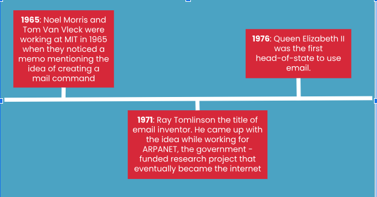

This is email computing innovation.

Email creation timeline.
| Question | Answer |
|---|---|
| What is the innovation? | Email (electronic mail) is the exchange of computer-stored messages from one user to one or more recipients via the Internet. |
| Why was it made? | People at MIT had to share one big computer to store their files in a specific location in the computer. Eventually, the users needed to communicate externally, and a messaging service was created. |
| When was it made? | Ray Tomlinson created the concept of email in 1971 when he sent emails between computers connected in the ARPANET. |
| How is it used? | Email is an effective communication method to send information to other digital users. Email is useful for sending data files, ensuring you have a physical copy of the conversation (in case you need to refer to it later), communicating with a large number of people, and it isn’t time-sensitive. |
| How many people worked on your computing innovation? | Email was made throughout time and was worked on by many different people. A total of 4 people. |
| What were the skills needed to make your computing innovation? | The email was first developed in the ARPANET when Ray Tomlinson combined the SNDMSG and CPYNET programs. These file transfer systems sent data over the ARPANET. This allowed emails to be sent from one computer to another. He used the User@host system to determine who the user was and their intended electronic destination. |
| Describe a program or part of a program that is an integral part of computing innovation. | The Simple Mail Transfer Protocol, or the SMTP is a technical standard for transmitting electronic mail over a network. SMTP allows computers and servers to exchange data regardless of their underlying hardware or software. |
| List the size of the team that developed the computing innovation. | Email was made throughout time and was worked on by many different people. A total of 4 people. |
| Describe the process used to create computing innovation. | Ray Tomlinson is credited with developing the email, but Shiva Ayyaduari continued refining his innovation after his death. Initially, MIT computer scientists created MAILBOX, a computer software program, to send messages between computers in the same lab, but it was time-consuming. Then, Ray Tomlinson created a series of experiments to allow emails to be sent through the ARPANET. First, he produced two messaging programs on the PDP-10 computer to share and receive emails. Then, he created CPYNET to combine the essence of the SNDMSG and READMAIL file transfer systems into one that mitigated the time-sharing issue. |
| Defend why you think it is a computing innovation rather than just a technological innovation. | A computing innovation is “an innovation that includes a computer or program code as an integral part of its functionality”. The email can only be accessed through computers and the code behind the file transfer systems allows emails to be sent and received by people across different devices connected to the internet. |
This is email computing innovation.
Email creation timeline.